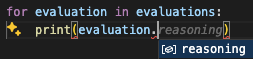

Using LLM-as-a-Judge to Evaluate AI Outputs¶
LLM as a judge is an evaluation technique that uses a language model to score the quality of answers of another model.
This allows you to automate certain types of evaluations that typically have to be done by humans, such as:
- Assessing the politeness or tone of chatbot responses
- Comparing and ranking two or more LLM responses according to how well they directly address the prompt or question
- Scoring the quality of a machine translation
- Determining how creative or original a response is
Such tasks have traditionally been hard to measure using software since they require subjective human-level interpretation, and machine learning assessments typically rely on objective rules or evaluation metrics.
In fact, there’s evidence that models like GPT-4 often come to similar conclusions on such tasks as humans do.
Below, we describe how LLM judges work, the steps required to set up an LLM as a judge, and the unique challenges they bring. We also show you a practical example of how to implement an LLM evaluator using our lightweight Python toolkit, Mirascope.
How LLM as a Judge Works¶
LLM judges work through a series of steps where you:
- Create a prompt containing the context, instructions, and evaluation criteria to guide the LLM’s judgment.
- Provide content for the LLM judge to evaluate, such as responses, translations, or paired comparisons (depending on the task).
- Analyze the judge’s output to make sure it aligns with the evaluation objectives.
We’ll describe these steps later on, but first a word about the choice of LLM, which impacts evaluation quality and cost.
Using the most intelligent models available on the market can be costly, but they’ll likely be the best judges at the start. Once you've collected and cleaned a large enough dataset of generations and judgements, fine-tuning a smaller model can often produce results that are more cost effective and consistently reflect human preferences in that domain.
Step 1: Create an Evaluation Prompt¶
Writing an evaluation prompt for judging LLM outputs is like explaining the rules of a game so the judge can make fair and consistent decisions based on clear criteria.
Overall, a well-designed prompt includes:
- Evaluation criteria and benchmarks for judgement. For instance, if the task involves comparing two translations, the criteria might focus on accuracy, fluency, or cultural appropriateness.
- Contextual or background information to help the LLM better understand its task. This might involve few-shot prompts of scored outputs, or explanations of desired tone, intended audience, or technical constraints.
- The desired format of the judgment: the LLM could return a score, a comparison, a detailed explanation of its decision, etc.
Below are three main ways in which models make evaluations:
Single Point Scoring¶
Here the LLM judge scores a single answer based on desired properties of good or bad outputs.
Responses are evaluated independently, without comparing them to others, and rely on predefined evaluation criteria like accuracy, clarity, relevance, and comprehensiveness, which should be outlined in the prompt.
This method scales well compared to pairwise comparisons (described below), because it evaluates each output independently, without needing to compare every output to others.
But it may be less effective at detecting subtle differences between responses. Absolute scores can also be more sensitive to changes in the judge model or evaluation criteria, as they lack a comparative baseline and rely on the model's interpretation of the criteria, which may change with model updates or new prompts.
Example:
Please act as an impartial evaluator and assign a score to the provided AI-generated response based on the evaluation criteria outlined below:
Evaluation criteria:
- Accuracy: Does the response give the correct answer to the query?
- Clarity: Is the response clear and easy to understand?
- Relevance: Does the response directly address the key aspects of the input query without unnecessary information?
- Comprehensiveness: Does the response cover all aspects of the input query?
Your task:
1. Carefully review the input query and the corresponding AI-generated response.
2. Assess the response according to the criteria listed above and assign a score from 1 to 5, where:
- 1 = Very poor
- 2 = Poor
- 3 = Fair
- 4 = Good
- 5 = Excellent
3. After assigning the score, provide a brief explanation justifying your decision based on the criteria.
Example Format:
Input Query:
{query}
AI-Generated Response:
{response}
Your Evaluation:
Score: {1-5}
Explanation: {Your reasoning here}
Reference-Based Scoring¶
Reference-based scoring builds upon single point scoring by introducing a “gold” reference answer within the prompt. This ground truth represents the ideal response, containing key information or qualities expected in a good answer.
The LLM evaluates the generated response by comparing it to this reference and assigns a score based on its similarity or adherence.
This method is often used in tasks like question answering or factual summarization, where a correct or best answer exists.
It’s also useful for evaluating math and reasoning questions, but may be overreliant on the reference solution and overlook errors it may contain.
Example:
[System]
Please act as an impartial judge and evaluate the quality of the AI-generated answer to the user question provided below. You will also be given a reference solution for comparison. Your evaluation should consider correctness, clarity, and adherence to the principles outlined in the reference solution.
Begin your evaluation by carefully comparing the AI-generated answer with the reference solution. Identify any outputs that aren't true, as well as omissions, or deviations, and simulate human judgments in explaining how these impact the overall quality of the response. Ensure that your assessment is objective and consistent.
At the end of your evaluation, assign a score from 1 to 5 based on the following scale:
- 1: Very poor—does not meet the requirements or is significantly incorrect.
- 2: Poor—contains major errors or omissions.
- 3: Fair—adequate but with notable flaws.
- 4: Good—meets the requirements with minor errors.
- 5: Excellent—fully accurate and well-articulated.
[User Question]
{question}
[Reference Solution]
{reference_solution}
[AI-Generated Answer]
{ai_generated_answer}
[Your Evaluation]
Score: {1-5}
Explanation: {Detailed reasoning based on the comparison}
Pairwise Comparison¶
Here, the LLM judge is given two different responses to the same prompt and is asked to decide which is better.
This approach focuses on relative comparisons rather than absolute scores, minimizing potential variability in the scoring behavior of different models should you decide to use more than one judge.
Pairwise comparison is widely used for creating alignment datasets, particularly those based on human annotations, as it highlights relative strengths and weaknesses between competing outputs.
The downside is that it becomes less scalable as the number of responses grows because the number of pairings increases dramatically. For example, evaluating 10 responses requires 45 comparisons, which can quickly become computationally expensive.
Example judge prompt:
"Please act as an impartial judge and evaluate the quality of the translations provided by two AI assistants for the source text and context displayed below. You should choose the translation that better adheres to the evaluation criteria outlined here:
- Accuracy: Faithfulness to the meaning of the source text.
- Fluency: Grammatical correctness and naturalness of the translation in the target language.
- Cultural appropriateness: Adaptation to the cultural and linguistic norms of the target audience.
- Tone: Aonsistency with the intended tone and style as described in the context.
Begin your evaluation by comparing the two translations against the criteria above and provide a detailed explanation of your decision. Avoid any position biases, and ensure that the order in which the translations are presented does not influence your decision. Do not allow response length or assistant names to influence your evaluation. Be as objective and specific as possible in your explanation.
After providing your explanation, output your final verdict in the following format:
1. "A" if translation A is better
2. "B" if translation B is better
3. "C" for a tie."
Step 2: Provide Content for Evaluation¶
The LLM judge uses its pretrained knowledge and contextual understanding to analyze outputs of other models based on instructions in the prompt.
Outputs that LLM evaluators typically review include:
- Chatbot responses in open ended and multi-turn conversations.
- Answers to math and reasoning problems, like comparing an LLM's answer to a predefined reference solution to assess its correctness and clarity.
- Summaries of text based on criteria like conciseness, accuracy, relevance to the main points of the original text, and overall readability.
Providing as much context as feasible to the model to make informed judgments (even including information about the user, the system, and any relevant resources) allows it to better interpret the intricacies of the task and provide judgments that align with the intended evaluation criteria.
Step 3: Analyze the Judge’s Evaluation¶
Doing “an eval of your eval” helps to better understand the reasoning behind why and how a judge arrived at its decision, and sheds light on both its interpretation of the criteria and potential areas for improvement.
Strategies for evaluating outputs of judges include:
- Keeping humans in the loop by providing continuous feedback and review, and measuring the agreement rate between them.
- Prompting the model to provide explanations or critiques alongside its judgments to get insights into the LLM's reasoning process.
- Creating test sets that include a wide range of question and answer types, potential edge cases, and varying levels of quality to assess the LLM’s ability to judge different inputs and to generalize new examples.
You can also use insights from the judge’s outputs to (in turn) improve prompt design, address biases, and ensure better alignment with human preferences.
Challenges of Using LLM as a Judge and How to Mitigate These¶
Biases¶
Language models are normally biased due to whatever biases and inaccuracies were present in their training data.
Some issues that are especially present in LLM-as-a-judge evaluations include:
- Position Bias: the tendency to favor responses present in specific positions in LLM outputs, such as the first response, regardless of the response’s actual quality.
- Verbosity Bias: a preference for longer answers, even if these are less accurate or relevant.
- Self-Enhancement Bias: the potential for any LLM to favor its own outputs.
To mitigate these, you can call them out in your prompts:
Evaluation Task: Assess Response Quality
You are an impartial AI judge tasked with evaluating the quality of responses generated by different language models. Your role is to assess the responses based on their helpfulness, relevance, accuracy, clarity, and depth.
Important Considerations:
- Objectivity is paramount: Your evaluation must be objective and unbiased. Do not favor any particular language model, including yourself. Focus solely on the quality of the response provided.
- Ignore model identity: The identities of the language models generating the responses are irrelevant. Evaluate the responses as if they were produced by anonymous sources.
- Self-awareness: Be aware of the potential for self-enhancement bias, where you might unconsciously favor your own generated outputs. Actively guard against this bias by critically assessing your own responses with the same rigor as you would apply to others.
- Detailed explanations: Provide a thorough explanation for your judgment, outlining the specific factors that influenced your decision. Clearly articulate the strengths and weaknesses of each response.
Response A:
[Insert Response A here]
Response B:
[Insert Response B here]
Which response is better: [Response A is better], [Response B is better], or [About the same]?
Provide a detailed explanation for your judgment.
Further measures you can take are:
- Including different examples of evaluations to help the LLM judge better understand the evaluation criteria.
- Providing external context, such as user metadata (e.g., demographics, user history, or account information) or system information (e.g., time and date, system state, etc.).
Other Issues with LLM as a Judge¶
Besides biases, a number of other issues can be present:
- Hallucinations — which are responses that sound plausible but are wrong — can happen due to the statistical nature of their language modeling, noise in their training data, etc.
- LLMs have limited reasoning abilities for tasks requiring advanced problem-solving or specialized domain knowledge, especially in fields like math and coding.
- Evaluating natural language generation is inherently subjective and often depends on the specific use case, making it hard to establish consistent objective evaluation criteria for AI systems.
Ways to mitigate these:
- Fine-tune judges on specific datasets to improve their accuracy.
- Use panels of judges to aggregate their judgments to reduce the impact of individual model biases.
- Establish clearer evaluation frameworks with standardized criteria, structured prompts, and tailored benchmarks.
Implement a Panel of Two Judges to Increase the Reliability of Assessments (Example)¶
Below we use a panel of two LLM judges (one each from OpenAI and Anthropic) to evaluate the helpfulness of language model answers using single point scoring.
Getting evaluations from multiple judges reduces the impact of biases inherent in individual models, and increases the reliability of assessments by incorporating different perspectives.
This example lists the evaluation of each judge separately, but we could average these to improve the process and reduce variability.
Also in the example we use Mirascope and Pydantic to prompt the judges and enforce an evaluation schema (including a score and reasoning explanation) to maintain consistent evaluations across different judges, as well as for reliable error handling.
Mirascope in particular follows a “use-when-you-need” design philosophy that lets you choose modules off the shelf and easily slot these into existing workflows, rather than having to adopt larger abstractions wholesale and cope with their lack of transparency, as other frameworks might encourage you to do.
The example below is from the Mirascope docs about evaluations.
Set Up the Environment¶
First we import Mirascope’s core functionality for working with large language models and Pydantic to enforce structured responses and type safety:
import inspect
from mirascope.core import anthropic, openai, prompt_template
from pydantic import BaseModel, Field
1. Define an Evaluation Model¶
Next we create a Pydantic data model (Eval) to define the schema of the evaluation output, which will contain both a score and the judge’s reasoning behind the score:
class Eval(BaseModel):
reasoning: str = Field(..., description="Reasoning for score in < 100 characters.")
score: float = Field(..., description="A score between [0, 5]")
Mirascope’s response model uses Eval to validate and structure LLM responses, as we’ll describe later.
2. Create an Evaluation Prompt¶
We use a Mirascope prompt decorator to define a reusable, parameterized template for evaluating the helpfulness of a given text:
@prompt_template()
def evaluate_helpfulness(text: str) -> str:
return inspect.cleandoc(
f"""
Text is helpful if it contains content that is:
- Supportive, constructive, and fosters understanding or learning
- Clear, concise, and provides actionable advice or useful information
- Encouraging, respectful, and empathetic towards others' situations
- Addressing the query or problem in a relevant and meaningful way
Use the following scoring criteria:
0 - Not helpful at all; completely irrelevant or dismissive
1 - Slightly helpful; some effort to assist but limited relevance or clarity
2 - Moderately helpful; partial solutions or incomplete advice
3 - Helpful; clear, constructive, and relevant
4 - Very helpful; thorough, actionable, and supportive
5 - Extremely helpful; exceptional support or guidance
Provide concise and clear reasoning for your assigned score.
Text to evaluate: {text}
"""
)
The prompt instruction defines what “helpfulness” means and provides scoring criteria. It also inserts the user-provided text using f-string formatting.
3. Define Judges and Use Them to Evaluate¶
We then set up two language models to be evaluators and execute the evaluations:
judges = [
openai.call("gpt-4o-mini", response_model=Eval),
anthropic.call("claude-3-5-sonnet-20240620", response_model=Eval),
]
evaluations: list[Eval] = [
judge(evaluate_helpfulness)(
"To improve your productivity, you could try using a time-blocking method. Break your day into segments and assign specific tasks to each segment."
)
for judge in judges
]
This involves creating a list of judges, each making a call to a specific provider.
Mirascope call functions like openai.call let you easily switch providers using minimal boilerplate since Mirascope abstracts away the details of working with their APIs.
We also support a range of popular providers, like OpenAI, Mistral, Gemini, Groq, and more.
Next, we run evaluate_helpfulness with a sample text through both LLMs as judges and parse the response of each with Eval to ensure structured and validated output.
Printing the code shows the results:
for evaluation in evaluations:
print(evaluation)
# Output
# OpenAI: reasoning='The text is constructive and provides actionable advice for productivity.' score=4.0
# Anthropic: reasoning='Clear and actionable recommendation with practical application.' score=4.0
Each LLM call uses a Mirascope response model to structure and validate the language model’s output, ensuring it conforms to the specified fields and types defined in Eval. This provides high-quality responses for downstream processing, such as using the output for another prompt.
Mirascope also ensures that structured responses are properly typed for IDE integration, which is invaluable during development for things like autocomplete:

Scale Your Evaluation Process with Confidence¶
Mirascope lets you scale and optimize LLM-as-a-judge evaluations with minimal overhead and maximum flexibility. You can build LLM-driven applications with our Python library offering simple, provider-agnostic tooling.
Want to learn more about how Mirascope can help you simplify and scale the evaluation process? You can find Mirascope code samples both in our documentation and on GitHub.